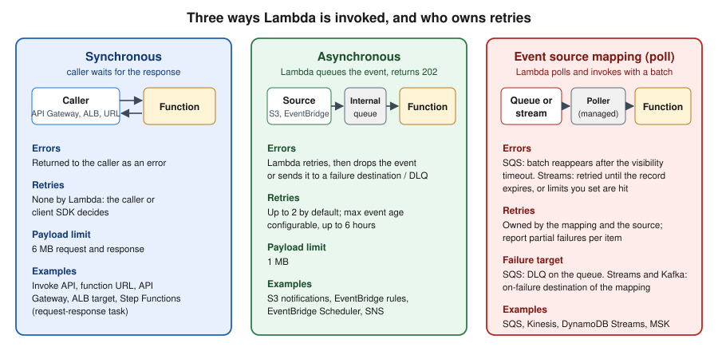
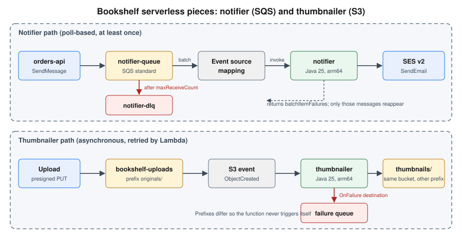

Lambda: Event-Driven and Serverless Apps
|
This content was generated with the assistance of AI and should be verified against the official documentation before being relied on in production. |
This page is the event-driven half of Lambda: how events reach a function, what happens when a function fails, and how to
package a small serverless application with AWS SAM. The function basics (runtimes, packaging, execution environment,
versions, SnapStart, limits) are on Lambda; this page builds on them. Examples target
AWS CLI 2.37 (2.37.7 was current when checked), AWS SAM CLI 1.166 (1.166.2), the managed runtimes java25, nodejs24.x and
python3.14, and Powertools for AWS Lambda (Java) 2.10, all checked on 2026-10-01. Re-verify with aws --version,
sam --version and the Lambda runtimes table before
relying on exact values. The running Bookshelf scenario is described in the section
introduction. Here it contributes two functions: notifier, which reads order events from an SQS queue and sends
confirmation emails through Amazon SES, and thumbnailer, which is triggered by uploads to the bookshelf-uploads bucket.
The region us-east-1 and the account ID 111122223333 are placeholders.
Invocation models
Every Lambda invocation falls into one of three models. The model decides who waits, who retries and where a failed event ends up, so it is the first thing to settle when designing a trigger.

| Model | Who calls the function | Retries and errors | Typical sources |
|---|---|---|---|
Synchronous |
The caller sends the request and waits for the response |
Lambda does not retry; the error goes back to the caller |
Invoke API with |
Asynchronous |
The caller hands the event to Lambda, which queues it and returns immediately |
Lambda retries failed invocations (2 retries by default) until the event expires; then the event is dropped, sent to a destination or dead-letter queue |
S3 notifications, EventBridge rules and Scheduler, SNS, Invoke API with |
Event source mapping |
A Lambda-managed poller reads a queue or stream and invokes the function with a batch (synchronously) |
Depends on the source: SQS messages return after the visibility timeout; stream records are retried until they expire or limits you set are reached |
SQS, Kinesis, DynamoDB Streams, Amazon MSK and self-managed Kafka, Amazon MQ, DocumentDB |
Two consequences matter in practice. First, delivery is at least once in every model, so handlers must be idempotent (see Idempotency). Second, the failure configuration lives in different places: on the function for asynchronous invocations, on the queue for SQS, and on the event source mapping for streams.
Asynchronous invocation: retries, destinations and dead-letter queues
For an asynchronous invocation Lambda places the event in an internal queue and returns HTTP 202. If the function returns an error or is throttled, Lambda retries with backoff. Two settings bound that behavior: maximum retry attempts (0 to 2, default 2) and maximum event age (60 seconds to 6 hours, default 6 hours). The asynchronous payload limit is 1 MB. When all attempts are used or the event ages out, Lambda can record the failure in one of two ways:
-
An on-failure destination (and optionally an on-success destination). Destinations carry the original event plus the response and error details, and can target an SQS standard queue, an SNS standard topic, an S3 bucket (failures only), another Lambda function or an EventBridge bus. They can be set on the function, a version or an alias.
-
A dead-letter queue (DLQ): an SQS standard queue or SNS standard topic that receives only the event, with the error code and message as message attributes. A DLQ is set on the function only. Destinations are the more capable and more current mechanism; use a DLQ only if you already depend on it. FIFO queues and FIFO topics are not supported as either.
Setting reserved concurrency to zero is a handy kill switch: new asynchronous events go straight to the failure destination or DLQ without running the function.
In the AWS Management Console
-
Open the Lambda console in your Region (the Region selector is at the top right) and choose the function, for example
thumbnailer. -
Choose Configuration, then Asynchronous invocation, then Edit. Set Maximum age of event and Retry attempts.
-
Choose Save. Then, under Function overview, choose Add destination, set Source to Asynchronous invocation, Condition to On failure, Destination type to Amazon SQS queue and pick the queue.
With the AWS CLI
export AWS_REGION=us-east-1
ACCOUNT_ID=$(aws sts get-caller-identity --query Account --output text)
aws sqs create-queue --queue-name thumbnailer-failures
FAIL_ARN=arn:aws:sqs:$AWS_REGION:$ACCOUNT_ID:thumbnailer-failures
aws lambda put-function-event-invoke-config \
--function-name thumbnailer \
--maximum-retry-attempts 2 \
--maximum-event-age-in-seconds 3600 \
--destination-config "{\"OnFailure\":{\"Destination\":\"$FAIL_ARN\"}}"See aws lambda put-function-event-invoke-config
and Capturing records of Lambda asynchronous invocations.
The function’s execution role needs the matching send permission for the destination (for SQS, sqs:SendMessage on the
queue); without it Lambda emits the DestinationDeliveryFailures metric and the record is lost.
Event source mappings
An event source mapping (ESM) is a Lambda resource that polls a source and invokes your function with batches of
records. You create it with create-event-source-mapping, and Lambda runs the pollers for you, so there is no consumer
fleet to operate. The execution role must allow the function to read from the source; for SQS the managed policy
AWSLambdaSQSQueueExecutionRole grants sqs:ReceiveMessage, sqs:DeleteMessage and sqs:GetQueueAttributes plus
CloudWatch Logs.
Amazon SQS
Lambda long-polls a standard or FIFO queue, invokes the function synchronously with a batch of messages and deletes the messages when the invocation succeeds. If the invocation fails, the messages stay in the queue, become visible again after the visibility timeout and are retried until the queue’s redrive policy moves them to a DLQ. The key parameters:
| Parameter | Meaning |
|---|---|
|
Messages per invocation. Default 10; up to 10,000 for standard queues (a batching window of at least 1 second is then required) and 10 for FIFO queues |
|
How long to gather messages before invoking, 0 to 300 seconds. Not supported for FIFO queues |
|
Set to |
|
Cap on concurrent invocations for this mapping, 2 to 1,000 |
|
Provisioned mode: minimum and maximum number of dedicated event pollers; cannot be combined with maximum concurrency |
|
Event patterns; messages that do not match are deleted from the queue without invoking the function |
Details that routinely cause incidents:
-
Visibility timeout. Set the queue’s visibility timeout to at least the function timeout; the official guidance is about six times the function timeout, plus the batching window, so that a slow batch is not redelivered while it is still running. Lambda rejects a mapping whose function timeout exceeds the queue’s visibility timeout.
-
Put the DLQ on the queue, not on the function. A function-level DLQ or destination only applies to asynchronous invocations, and an SQS mapping is synchronous. Set
maxReceiveCounton the source queue’s redrive policy to 5 or more so transient failures and throttling do not push messages to the DLQ too early. -
Throttling. Default scaling starts with five concurrent batches and adds up to 300 concurrent invocations per minute, up to 1,250 concurrent invocations per mapping or your account concurrency, whichever is lower. Use maximum concurrency so a busy queue cannot starve other functions of reserved or account concurrency, and keep reserved concurrency at least as high as the sum of the maximum concurrency values of all SQS mappings on the function.
-
Provisioned mode reserves event pollers for workloads with strict latency or very bursty traffic; it scales faster and to far higher concurrency than the default and is billed per provisioned poller (see Pricing model). Each poller handles up to 1 MB/s or 10 concurrent invocations.
-
FIFO queues deliver in order per message group, so concurrency is capped by the number of active message group IDs. On a failure, stop processing and report the failed message and every message after it.
Partial batch responses
By default a single failing message fails the whole batch, and every message in it, including the ones already
processed, becomes visible again. With ReportBatchItemFailures the function returns only the IDs of the messages that
failed:
{
"batchItemFailures": [
{ "itemIdentifier": "059f36b4-87a3-44ab-83d2-661975830a7d" }
]
}Lambda treats an empty or null list as full success. It treats an invalid response, a null or empty identifier, or an
identifier that is not in the batch as a complete failure, and an unhandled exception also fails the whole batch. An
additional benefit: with this setting on, Lambda does not scale down polling when invocations fail, so a few poison
messages do not slow the rest of the queue. Watch the SQS metrics NumberOfMessagesDeleted (a drop to zero means the
response is not being parsed) and ApproximateAgeOfOldestMessage.
See Handling errors for an SQS event source in Lambda
and Lambda parameters for Amazon SQS event source mappings.
DynamoDB Streams and Kinesis
Stream sources are ordered per shard, and a failing batch blocks that shard until it succeeds, expires or is skipped, so the controls are different from SQS:
| Parameter | Meaning |
|---|---|
|
|
|
Records per invocation (default 100, up to 10,000) and how long to wait to fill it |
|
1 to 10 concurrent batches per shard while preserving per-partition-key order |
|
Stop retrying a failing batch after N attempts or when the oldest record is older than the age; default is to retry until the record expires |
|
Split a failing batch in two and retry each half, isolating the bad record |
|
Where the metadata of discarded records goes (SQS, SNS or S3); the destination holds pointers to the stream records, not the data |
|
|
|
Up to 15 minutes of stateful aggregation across invocations |
Always set a maximum record age or retry count on production stream mappings; the default of retrying until the record
expires lets one poison record stall a shard for up to the stream’s retention (24 hours by default for DynamoDB Streams
and Kinesis). A DynamoDB table with a stream and a mapping is the standard way to react to Orders changes; the table side
is covered in DynamoDB. Amazon MSK and self-managed Kafka mappings follow the same
model with an on-failure destination, and are introduced in Messaging and integration.
Creating a mapping
In the AWS Management Console
-
Open the Lambda console and choose the function.
-
Choose Add trigger (or Configuration, Triggers, Add trigger) and select SQS, DynamoDB or Kinesis.
-
Pick the source resource, set Batch size and Batch window. For SQS, expand Additional settings and select Report batch item failures, and set Maximum concurrency if needed. For streams also set Starting position, Retry attempts, Maximum age of record, Split batch on error and On-failure destination.
-
Keep Activate trigger selected and choose Add. The console also adds the managed-policy permissions the role needs.
With the AWS CLI
QUEUE_ARN=arn:aws:sqs:$AWS_REGION:$ACCOUNT_ID:notifier-queue
aws lambda create-event-source-mapping \
--function-name notifier \
--event-source-arn "$QUEUE_ARN" \
--batch-size 10 \
--maximum-batching-window-in-seconds 5 \
--function-response-types ReportBatchItemFailures \
--scaling-config MaximumConcurrency=10 \
--query UUID --output text
# A DynamoDB Streams mapping for the Orders table
STREAM_ARN=$(aws dynamodb describe-table --table-name Orders \
--query Table.LatestStreamArn --output text)
aws lambda create-event-source-mapping \
--function-name order-projector \
--event-source-arn "$STREAM_ARN" \
--starting-position LATEST \
--batch-size 100 \
--maximum-retry-attempts 3 \
--maximum-record-age-in-seconds 3600 \
--bisect-batch-on-function-error \
--function-response-types ReportBatchItemFailures \
--destination-config "{\"OnFailure\":{\"Destination\":\"$FAIL_ARN\"}}"See aws lambda create-event-source-mapping and How Lambda processes records from stream and queue-based event sources. To change a mapping later, use aws lambda update-event-source-mapping with the UUID from aws lambda list-event-source-mappings. For example, this switches an SQS mapping to provisioned mode and back:
aws lambda update-event-source-mapping --uuid "$UUID" \
--provisioned-poller-config '{"MinimumPollers": 2, "MaximumPollers": 20}'
aws lambda update-event-source-mapping --uuid "$UUID" --provisioned-poller-config '{}'The Bookshelf notifier: SQS to Lambda to SES
When orders-api accepts an order it sends a message to notifier-queue; the notifier function sends a confirmation
email through SES. The queue absorbs bursts, retries are free, and a sustained SES problem ends up in a DLQ rather than
in a lost email.

IAM policies
The function needs a trust policy for the Lambda service and a permissions policy scoped to this queue and this identity:
{
"Version": "2012-10-17",
"Statement": [
{
"Effect": "Allow",
"Principal": { "Service": "lambda.amazonaws.com" },
"Action": "sts:AssumeRole"
}
]
}{
"Version": "2012-10-17",
"Statement": [
{
"Sid": "ConsumeNotifierQueue",
"Effect": "Allow",
"Action": [
"sqs:ReceiveMessage",
"sqs:DeleteMessage",
"sqs:GetQueueAttributes"
],
"Resource": "arn:aws:sqs:us-east-1:111122223333:notifier-queue"
},
{
"Sid": "SendConfirmationEmail",
"Effect": "Allow",
"Action": "ses:SendEmail",
"Resource": "arn:aws:ses:us-east-1:111122223333:identity/example.com"
},
{
"Sid": "WriteLogs",
"Effect": "Allow",
"Action": [
"logs:CreateLogGroup",
"logs:CreateLogStream",
"logs:PutLogEvents"
],
"Resource": "arn:aws:logs:us-east-1:111122223333:log-group:/aws/lambda/notifier:*"
}
]
}If the queue uses a customer managed KMS key, add kms:Decrypt on that key. The producer (orders-api) needs only
sqs:SendMessage on the queue, granted to its ECS task role or instance profile. See
Defining Lambda function permissions with an execution role
and Controlling access to Amazon SES.
In the AWS Management Console
-
Open Amazon SQS, choose Create queue, keep Standard, name it
notifier-dlqand create it. -
Choose Create queue again and name it
notifier-queue. Set Visibility timeout to 3 minutes. Under Dead-letter queue choose Enabled, selectnotifier-dlqand set Maximum receives to 5. -
Open IAM, Roles, Create role, choose AWS service and Lambda, attach
AWSLambdaSQSQueueExecutionRole, name the rolenotifier-role, then add theSendConfirmationEmailstatement above as an inline policy. -
Open the Lambda console, choose Create function, Author from scratch, name
notifier, runtime Java 25, architecture arm64, and under Change default execution role use the existing rolenotifier-role. -
On the Code tab choose Upload from, .zip or .jar file and upload
notifier.jar. In Runtime settings choose Edit and set the handler tocom.example.bookshelf.notifier.NotifierHandler::handleRequest. -
In Configuration, General configuration, Edit: memory 512 MB, timeout 30 seconds. In Environment variables add
SENDERwithno-reply@example.com. -
Choose Add trigger, SQS, select
notifier-queue, batch size 10, batch window 5 seconds, enable Report batch item failures, set Maximum concurrency to 10 and choose Add. -
Send a test message from the SQS console (Send and receive messages) and read the function’s log group in CloudWatch, Log groups,
/aws/lambda/notifier.
With the AWS CLI
export AWS_REGION=us-east-1
ACCOUNT_ID=$(aws sts get-caller-identity --query Account --output text)
# Queues: DLQ first, then the source queue that points at it
DLQ_URL=$(aws sqs create-queue --queue-name notifier-dlq --query QueueUrl --output text)
DLQ_ARN=$(aws sqs get-queue-attributes --queue-url "$DLQ_URL" \
--attribute-names QueueArn --query Attributes.QueueArn --output text)
cat > queue-attrs.json <<EOF
{
"VisibilityTimeout": "180",
"RedrivePolicy": "{\"deadLetterTargetArn\":\"$DLQ_ARN\",\"maxReceiveCount\":\"5\"}"
}
EOF
QUEUE_URL=$(aws sqs create-queue --queue-name notifier-queue \
--attributes file://queue-attrs.json --query QueueUrl --output text)
QUEUE_ARN=arn:aws:sqs:$AWS_REGION:$ACCOUNT_ID:notifier-queue
# Role: trust policy from above saved as trust.json, permissions as notifier-policy.json
aws iam create-role --role-name notifier-role \
--assume-role-policy-document file://trust.json
aws iam put-role-policy --role-name notifier-role \
--policy-name notifier-permissions --policy-document file://notifier-policy.json
ROLE_ARN=arn:aws:iam::$ACCOUNT_ID:role/notifier-role
# Function
aws lambda create-function \
--function-name notifier \
--runtime java25 \
--architectures arm64 \
--handler com.example.bookshelf.notifier.NotifierHandler::handleRequest \
--role "$ROLE_ARN" \
--memory-size 512 --timeout 30 \
--environment "Variables={SENDER=no-reply@example.com}" \
--zip-file fileb://notifier/target/notifier.jar
# Mapping with partial batch responses and a concurrency cap
aws lambda create-event-source-mapping \
--function-name notifier \
--event-source-arn "$QUEUE_ARN" \
--batch-size 10 --maximum-batching-window-in-seconds 5 \
--function-response-types ReportBatchItemFailures \
--scaling-config MaximumConcurrency=10
# Smoke test
aws sqs send-message --queue-url "$QUEUE_URL" \
--message-body '{"orderId":"o-1001","email":"reader@example.com","title":"Dune"}'
aws logs tail /aws/lambda/notifier --followReferences: aws sqs create-queue,
aws iam create-role,
aws iam put-role-policy,
aws lambda create-function,
aws sqs send-message,
aws logs tail. A new role can take several seconds to be
usable; if create-function reports that the role cannot be assumed, wait and retry. After fixing the cause of DLQ
messages, move them back with
aws sqs start-message-move-task
(--source-arn "$DLQ_ARN"), which redrives to the original queue, or the Start DLQ redrive button in the SQS console.
Java code
The handler uses the AWS SDK for Java 2.x SesV2Client with the default credential chain, which on Lambda resolves to the
execution role, never to long-lived keys. The Powertools batch utility implements the batchItemFailures contract: it
calls the message handler for every record, catches exceptions and returns the failed IDs (for FIFO queues it stops at the
first failure).
<dependencyManagement>
<dependencies>
<dependency>
<groupId>software.amazon.awssdk</groupId>
<artifactId>bom</artifactId>
<version>${aws.sdk.version}</version>
<type>pom</type>
<scope>import</scope>
</dependency>
</dependencies>
</dependencyManagement>
<dependencies>
<dependency>
<groupId>software.amazon.awssdk</groupId>
<artifactId>sesv2</artifactId>
<exclusions>
<exclusion>
<groupId>software.amazon.awssdk</groupId>
<artifactId>netty-nio-client</artifactId>
</exclusion>
<exclusion>
<groupId>software.amazon.awssdk</groupId>
<artifactId>apache-client</artifactId>
</exclusion>
</exclusions>
</dependency>
<dependency>
<groupId>software.amazon.awssdk</groupId>
<artifactId>url-connection-client</artifactId>
</dependency>
<dependency>
<groupId>com.amazonaws</groupId>
<artifactId>aws-lambda-java-core</artifactId>
<version>${lambda.core.version}</version>
</dependency>
<dependency>
<groupId>com.amazonaws</groupId>
<artifactId>aws-lambda-java-events</artifactId>
<version>${lambda.events.version}</version>
</dependency>
<dependency>
<groupId>software.amazon.lambda</groupId>
<artifactId>powertools-batch</artifactId>
<version>${powertools.version}</version>
</dependency>
<dependency>
<groupId>com.fasterxml.jackson.core</groupId>
<artifactId>jackson-databind</artifactId>
</dependency>
</dependencies>Take the artifact versions from the SDK for Java setup guide,
the aws-lambda-java-libs repository and the
Powertools for AWS Lambda (Java) documentation. The url-connection-client
HTTP client starts faster than the default Apache client, which matters for cold starts.
package com.example.bookshelf.notifier;
import com.amazonaws.services.lambda.runtime.Context;
import com.amazonaws.services.lambda.runtime.RequestHandler;
import com.amazonaws.services.lambda.runtime.events.SQSBatchResponse;
import com.amazonaws.services.lambda.runtime.events.SQSEvent;
import com.fasterxml.jackson.databind.ObjectMapper;
import software.amazon.awssdk.http.urlconnection.UrlConnectionHttpClient;
import software.amazon.awssdk.services.sesv2.SesV2Client;
import software.amazon.awssdk.services.sesv2.model.Body;
import software.amazon.awssdk.services.sesv2.model.Content;
import software.amazon.awssdk.services.sesv2.model.Destination;
import software.amazon.awssdk.services.sesv2.model.EmailContent;
import software.amazon.awssdk.services.sesv2.model.Message;
import software.amazon.awssdk.services.sesv2.model.SendEmailRequest;
import software.amazon.lambda.powertools.batch.BatchMessageHandlerBuilder;
import software.amazon.lambda.powertools.batch.handler.BatchMessageHandler;
public class NotifierHandler implements RequestHandler<SQSEvent, SQSBatchResponse> {
// Created once per execution environment (INIT phase), reused by every invocation.
private static final SesV2Client SES = SesV2Client.builder()
.httpClient(UrlConnectionHttpClient.create())
.build();
private static final ObjectMapper JSON = new ObjectMapper();
private static final String SENDER = System.getenv("SENDER");
private final BatchMessageHandler<SQSEvent, SQSBatchResponse> handler =
new BatchMessageHandlerBuilder()
.withSqsBatchHandler()
.buildWithRawMessageHandler(this::sendConfirmation);
@Override
public SQSBatchResponse handleRequest(SQSEvent event, Context context) {
return handler.processBatch(event, context);
}
/** Any exception thrown here marks only this message as failed. */
private void sendConfirmation(SQSEvent.SQSMessage message) {
try {
OrderPlaced order = JSON.readValue(message.getBody(), OrderPlaced.class);
SES.sendEmail(SendEmailRequest.builder()
.fromEmailAddress(SENDER)
.destination(Destination.builder().toAddresses(order.email()).build())
.content(EmailContent.builder().simple(Message.builder()
.subject(Content.builder().data("Your Bookshelf order " + order.orderId()).build())
.body(Body.builder().text(Content.builder()
.data("Thank you for ordering " + order.title() + ".").build()).build())
.build()).build())
.build());
} catch (java.io.IOException e) {
throw new IllegalArgumentException("Unreadable message " + message.getMessageId(), e);
}
}
record OrderPlaced(String orderId, String email, String title) { }
}SnapStart for Java, ARM64 and memory tuning are covered in Lambda. A poison message (unparseable
JSON) will fail five times and land in notifier-dlq, while the rest of the batch is deleted. For Spring Boot,
Spring Cloud Function and the Lambda Web Adapter, see the same page; Spring Cloud AWS @SqsListener is meant for
long-running consumers (ECS, EKS, EC2), not for a function invoked by an event source mapping. Quarkus functions are in
Quarkus serverless and cloud functions.
Idempotency
Event source mappings, asynchronous retries and SQS standard queues all deliver at least once, so the confirmation email
could be sent twice. Make the handler idempotent by keying on orderId: record the key in a DynamoDB table with a
conditional write and skip work already done. The Powertools idempotency utility (powertools-idempotency-dynamodb,
@Idempotent and @IdempotencyKey) implements this pattern with a TTL on the records. Use SQS FIFO with a
MessageDeduplicationId only when ordering or five-minute deduplication is needed; it does not replace idempotent code.
See Powertools idempotency.
The Bookshelf thumbnailer: S3 to Lambda
When a cover image is uploaded under originals/ in bookshelf-uploads-<account-id>, S3 invokes thumbnailer
asynchronously with an event describing the new object; the function writes a resized copy under thumbnails/. The
bucket itself (private, encrypted, versioned) is covered in S3 object storage and
S3 security and static hosting.
Design rules for S3 triggers:
-
Avoid recursion. A function that writes into the bucket that triggers it will trigger itself forever. Use a different bucket, or a prefix filter (
originals/) that excludes the output prefix (thumbnails/), as here. -
The event key is URL-encoded. A space becomes
+and special characters are percent-encoded; decode it before callingGetObject. The Java events library offersgetUrlDecodedKey(). -
Delivery is at least once and not ordered. Notifications usually arrive in seconds but can be duplicated; make the output deterministic (the same input key always overwrites the same thumbnail key).
-
S3 invokes the function asynchronously, so the asynchronous retry, destination and DLQ settings from Asynchronous invocation: retries, destinations and dead-letter queues apply.
-
Permissions are two-sided. S3 needs a resource-based policy on the function to invoke it, and the function’s role needs
s3:GetObjectands3:PutObject. -
Alternative: EventBridge. S3 can send all events to EventBridge, which then offers filtering on object attributes, fan-out to several targets and archive/replay, at the cost of an extra hop. Use direct notifications for one simple consumer and EventBridge when several consumers care.
IAM policies
Execution role permissions for thumbnailer (the trust policy is the same as for notifier):
{
"Version": "2012-10-17",
"Statement": [
{
"Sid": "ReadOriginals",
"Effect": "Allow",
"Action": "s3:GetObject",
"Resource": "arn:aws:s3:::bookshelf-uploads-111122223333/originals/*"
},
{
"Sid": "WriteThumbnails",
"Effect": "Allow",
"Action": "s3:PutObject",
"Resource": "arn:aws:s3:::bookshelf-uploads-111122223333/thumbnails/*"
},
{
"Sid": "ReportFailures",
"Effect": "Allow",
"Action": "sqs:SendMessage",
"Resource": "arn:aws:sqs:us-east-1:111122223333:thumbnailer-failures"
},
{
"Sid": "WriteLogs",
"Effect": "Allow",
"Action": [
"logs:CreateLogGroup",
"logs:CreateLogStream",
"logs:PutLogEvents"
],
"Resource": "arn:aws:logs:us-east-1:111122223333:log-group:/aws/lambda/thumbnailer:*"
}
]
}The function’s resource-based policy statement that lets this bucket, and only this bucket in this account, invoke it.
add-permission creates it:
{
"Sid": "AllowUploadsBucket",
"Effect": "Allow",
"Principal": { "Service": "s3.amazonaws.com" },
"Action": "lambda:InvokeFunction",
"Resource": "arn:aws:lambda:us-east-1:111122223333:function:thumbnailer",
"Condition": {
"StringEquals": { "AWS:SourceAccount": "111122223333" },
"ArnLike": { "AWS:SourceArn": "arn:aws:s3:::bookshelf-uploads-111122223333" }
}
}Always include the source account condition: a bucket name can be deleted and re-created by another account, and without the condition that account could invoke your function. See Process Amazon S3 event notifications with Lambda and Viewing resource-based IAM policies in Lambda.
In the AWS Management Console
-
Create the
thumbnailerfunction as fornotifier(runtime Java 25, arm64, memory 1024 MB, timeout 60 seconds, role with the policy above, handlercom.example.bookshelf.thumbnailer.ThumbnailerHandler::handleRequest). -
In the function, choose Add trigger and select S3. Choose the bucket
bookshelf-uploads-<account-id>, set Event types to All object create events, Prefix tooriginals/and optionally Suffix to.jpg. Acknowledge the recursive invocation warning (which does not apply because of the prefixes) and choose Add. The console adds the resource-based policy for you. -
Under Configuration, Asynchronous invocation, set the retry attempts and failure destination as described earlier.
-
Upload an image under
originals/in the S3 console and checkthumbnails/and the log group/aws/lambda/thumbnailer.
With the AWS CLI
BUCKET=bookshelf-uploads-$ACCOUNT_ID
FN_ARN=arn:aws:lambda:$AWS_REGION:$ACCOUNT_ID:function:thumbnailer
# 1. Allow S3 to invoke the function (resource-based policy)
aws lambda add-permission \
--function-name thumbnailer \
--statement-id AllowUploadsBucket \
--action lambda:InvokeFunction \
--principal s3.amazonaws.com \
--source-arn arn:aws:s3:::$BUCKET \
--source-account $ACCOUNT_ID
# 2. Configure the bucket notification (replaces the whole configuration)
cat > notification.json <<EOF
{
"LambdaFunctionConfigurations": [
{
"Id": "thumbnail-originals",
"LambdaFunctionArn": "$FN_ARN",
"Events": ["s3:ObjectCreated:*"],
"Filter": {
"Key": {
"FilterRules": [
{ "Name": "prefix", "Value": "originals/" },
{ "Name": "suffix", "Value": ".jpg" }
]
}
}
}
]
}
EOF
aws s3api put-bucket-notification-configuration \
--bucket "$BUCKET" --notification-configuration file://notification.json
# 3. Test
aws s3 cp cover.jpg s3://$BUCKET/originals/cover.jpg
aws s3 ls s3://$BUCKET/thumbnails/See aws lambda add-permission,
aws s3api put-bucket-notification-configuration
and Amazon S3 event notification types and destinations.
put-bucket-notification-configuration overwrites the bucket’s entire notification configuration, so fetch the existing
one with aws s3api get-bucket-notification-configuration and merge before applying it to a bucket that already has
notifications. Run add-permission first: S3 validates that it can invoke the function when you save the configuration.
Java code
package com.example.bookshelf.thumbnailer;
import com.amazonaws.services.lambda.runtime.Context;
import com.amazonaws.services.lambda.runtime.RequestHandler;
import com.amazonaws.services.lambda.runtime.events.S3Event;
import com.amazonaws.services.lambda.runtime.events.models.s3.S3EventNotification.S3EventNotificationRecord;
import software.amazon.awssdk.core.sync.RequestBody;
import software.amazon.awssdk.http.urlconnection.UrlConnectionHttpClient;
import software.amazon.awssdk.services.s3.S3Client;
import software.amazon.awssdk.services.s3.model.GetObjectRequest;
import software.amazon.awssdk.services.s3.model.PutObjectRequest;
import javax.imageio.ImageIO;
import java.awt.Image;
import java.awt.image.BufferedImage;
import java.io.ByteArrayOutputStream;
import java.io.IOException;
import java.io.InputStream;
public class ThumbnailerHandler implements RequestHandler<S3Event, String> {
private static final S3Client S3 = S3Client.builder()
.httpClient(UrlConnectionHttpClient.create())
.build();
private static final int WIDTH = 200;
@Override
public String handleRequest(S3Event event, Context context) {
for (S3EventNotificationRecord record : event.getRecords()) {
String bucket = record.getS3().getBucket().getName();
String key = record.getS3().getObject().getUrlDecodedKey();
if (!key.startsWith("originals/")) {
continue; // defensive: never process our own output
}
String outKey = "thumbnails/" + key.substring("originals/".length());
try (InputStream in = S3.getObject(GetObjectRequest.builder()
.bucket(bucket).key(key).build())) {
BufferedImage source = ImageIO.read(in);
int height = Math.max(1, source.getHeight() * WIDTH / source.getWidth());
BufferedImage target = new BufferedImage(WIDTH, height, BufferedImage.TYPE_INT_RGB);
target.getGraphics().drawImage(
source.getScaledInstance(WIDTH, height, Image.SCALE_SMOOTH), 0, 0, null);
ByteArrayOutputStream out = new ByteArrayOutputStream();
ImageIO.write(target, "jpg", out);
S3.putObject(PutObjectRequest.builder()
.bucket(bucket).key(outKey).contentType("image/jpeg").build(),
RequestBody.fromBytes(out.toByteArray()));
} catch (IOException e) {
// Rethrow so Lambda retries, then routes the event to the failure destination.
throw new IllegalStateException("Cannot thumbnail " + key, e);
}
}
return "ok";
}
}Throwing makes the asynchronous invocation fail, so Lambda retries and then uses the failure destination. For large images
raise memory (CPU scales with it) and /tmp size rather than buffering everything in a small heap. The same
logic in Node.js uses the modular SDK v3 (@aws-sdk/client-s3); older tutorials that use the Node.js SDK v2 or Python 3.8
and 3.9 runtimes are outdated (see Where older guides are outdated).
Other triggers
EventBridge rules and EventBridge Scheduler
Amazon EventBridge matches events on a bus against rules and invokes targets, including Lambda. A rule is the right tool for reacting to AWS service events (for example EC2 state changes or CloudTrail API calls) and for custom application events; EventBridge invokes the function asynchronously. EventBridge Scheduler is the recommended way to run a function on a schedule or at a given time: it supports one-time schedules, rate and cron expressions, time zones, flexible time windows, retry policies and a DLQ per schedule, and scales to millions of schedules. Prefer it over scheduled rules for new work.
In the AWS Management Console
-
Open Amazon EventBridge, then Rules, Create rule, name
order-created, choose thedefaultbus and Rule with an event pattern. Provide a pattern, for example sourcebookshelf.ordersand detail typeOrderPlaced. -
Choose AWS service as the target, Lambda function, select the function and create the rule. The console adds the resource-based policy.
-
For a schedule, open EventBridge Scheduler, Schedules, Create schedule; choose a Recurring or One-time schedule, set the expression, choose Flexible time window off, pick AWS Lambda as the target and let the console create the scheduler execution role.
With the AWS CLI
# Event pattern rule on the default bus
aws events put-rule --name order-created \
--event-pattern '{"source":["bookshelf.orders"],"detail-type":["OrderPlaced"]}'
RULE_ARN=$(aws events describe-rule --name order-created --query Arn --output text)
aws events put-targets --rule order-created \
--targets "Id=notifier-target,Arn=arn:aws:lambda:$AWS_REGION:$ACCOUNT_ID:function:order-projector"
aws lambda add-permission --function-name order-projector \
--statement-id AllowEventBridgeRule --action lambda:InvokeFunction \
--principal events.amazonaws.com --source-arn "$RULE_ARN"
# Hourly schedule with EventBridge Scheduler (role trusts scheduler.amazonaws.com)
aws scheduler create-schedule \
--name hourly-catalog-refresh \
--schedule-expression "rate(1 hour)" \
--flexible-time-window Mode=OFF \
--target "{\"Arn\":\"arn:aws:lambda:$AWS_REGION:$ACCOUNT_ID:function:catalog-refresh\",\"RoleArn\":\"arn:aws:iam::$ACCOUNT_ID:role/scheduler-invoke-lambda\",\"RetryPolicy\":{\"MaximumRetryAttempts\":2}}"References: aws events put-rule,
aws events put-targets,
aws scheduler create-schedule,
EventBridge Scheduler User Guide,
Schedule Lambda with EventBridge. The scheduler
execution role needs lambda:InvokeFunction on the target and a trust policy for scheduler.amazonaws.com. Buses, pipes
and SNS fan-out are introduced in Messaging and integration.
HTTP front ends: function URL, API Gateway and ALB
These synchronous triggers turn a function into an HTTP service:
| Front end | Use it when | Notes |
|---|---|---|
Function URL |
A single public or IAM-authenticated HTTPS endpoint is enough (webhooks, internal tools) |
Auth type |
API Gateway |
Routes, authorizers (JWT, Lambda, IAM, Cognito), throttling, usage plans, stages, custom domains |
HTTP API is the cheaper default; see API Gateway. Synchronous integration limit applies |
Application Load Balancer |
Lambda is one target among instances and containers, or you already terminate TLS and WAF on an ALB |
Target group of type |
# Function URL protected by IAM
aws lambda create-function-url-config \
--function-name catalog-lookup --auth-type AWS_IAM \
--cors '{"AllowOrigins":["https://www.example.com"],"AllowMethods":["GET"]}'
# ALB target group of type lambda
aws elbv2 create-target-group --name tg-catalog-lambda --target-type lambda
aws lambda add-permission --function-name catalog-lookup \
--statement-id AllowAlb --action lambda:InvokeFunction \
--principal elasticloadbalancing.amazonaws.com --source-arn "$TG_ARN"
aws elbv2 register-targets --target-group-arn "$TG_ARN" \
--targets Id=arn:aws:lambda:$AWS_REGION:$ACCOUNT_ID:function:catalog-lookupSee aws lambda create-function-url-config,
Creating and managing Lambda function URLs and
Lambda functions as targets of an ALB.
A synchronous HTTP front end holds a connection open while the function runs, so keep it short; push anything long
behind an SQS queue and answer with 202 Accepted, the same decoupling the notifier uses.
Lambda in a VPC
A function can attach to subnets and security groups in your VPC to reach private resources such as an Aurora cluster, an ElastiCache for Valkey endpoint or an internal service. Lambda creates shared Hyperplane network interfaces per unique subnet and security-group combination, so attaching a function no longer adds a cold-start penalty per invocation. Points to remember:
-
A function in a VPC loses default internet access: its traffic follows your route tables. Reach AWS services through gateway endpoints (S3, DynamoDB) and interface endpoints (for example SQS, Secrets Manager, KMS, STS, CloudWatch Logs), or through a NAT gateway (hourly and per-GB charges; see VPC networking). Endpoints are normally cheaper and keep traffic on the AWS network.
-
The event source mapping poller runs in the Lambda service, not in your VPC, so SQS, Kinesis or DynamoDB Streams mappings work without endpoints. Only calls your function code makes (for example to SES or S3) need a route.
-
Use public subnets only for functions that need a public IP, which Lambda never assigns; place VPC functions in private subnets, in at least two Availability Zones.
-
The ENI quota is per VPC and shared with other services such as EFS (3,000 by default); plan IP space accordingly.
-
EFS: mount a file system through an access point (path, POSIX user) when functions need shared or large state; the function must be in the same VPC and the execution role needs the
elasticfilesystem:ClientMountpermissions. See Block and file storage. -
Databases: every concurrent environment opens its own connection, so a burst can exhaust connections. Connect through RDS Proxy (pooling, IAM authentication, Secrets Manager credentials); see RDS and Aurora. Aurora and RDS also have a Data API/HTTP option where applicable.
aws lambda update-function-configuration \
--function-name catalog-lookup \
--vpc-config SubnetIds=$SUBNET_A,$SUBNET_B,SecurityGroupIds=$SG_IDSee aws lambda update-function-configuration and Giving Lambda functions access to resources in an Amazon VPC. In the console the same settings are under Configuration, VPC, Edit.
Orchestration: Step Functions and durable functions
When one event must drive several steps with branching, waiting, retries and compensation, avoid chaining functions through queues by hand. Two AWS options exist:
| Aspect | AWS Step Functions | Lambda durable functions |
|---|---|---|
What it is |
A separate state-machine service defined in Amazon States Language, with a visual designer |
Regular Lambda functions that use a checkpoint-and-replay SDK (JavaScript, TypeScript, Python and Java) for multi-step workflows up to one year long; introduced in late 2025 |
Best for |
Coordinating many AWS services with 200+ native integrations, visual operation, zero code between steps |
Workflows tightly coupled to application code, written in a normal language, with steps, waits and callbacks |
Waiting |
Wait states and callback tokens without compute cost |
Waits suspend the function without compute charges |
Failure handling |
Retry and Catch per state, Standard and Express workflows |
Built-in step retries, checkpointing and automatic recovery by replay; steps must be deterministic |
A minimal Standard state machine for the Bookshelf order flow, which calls two functions and retries the first on service errors, is a Task state per step:
{
"Comment": "Process an order, then notify",
"StartAt": "Reserve",
"States": {
"Reserve": {
"Type": "Task",
"Resource": "arn:aws:states:::lambda:invoke",
"Parameters": { "FunctionName": "reserve-stock", "Payload.$": "$" },
"OutputPath": "$.Payload",
"Retry": [
{
"ErrorEquals": ["Lambda.ServiceException", "Lambda.TooManyRequestsException"],
"IntervalSeconds": 2,
"MaxAttempts": 4,
"BackoffRate": 2.0
}
],
"Next": "Notify"
},
"Notify": {
"Type": "Task",
"Resource": "arn:aws:states:::lambda:invoke",
"Parameters": { "FunctionName": "notifier-direct", "Payload.$": "$" },
"End": true
}
}
}Create it with aws stepfunctions create-state-machine
(--definition file://order-flow.asl.json --role-arn … --type STANDARD); in the console use Step Functions,
State machines, Create state machine and the Workflow Studio designer. See the
Step Functions Developer Guide,
Lambda durable functions and
Durable functions or Step Functions for the
detailed decision guide. Durable executions have their own quotas (for example a maximum number of durable operations per
execution) listed on the Lambda quotas page. Older guides recommend chaining functions directly or building state machines
for every wait; for in-application workflows in a supported language, durable functions are now an alternative.
Lambda Managed Instances
Lambda Managed Instances (introduced in late 2025) run your functions on current-generation Amazon EC2 instances in your account that Lambda manages for you: you keep the Lambda programming model and event integrations, and gain choice of instance type (including Graviton and network-optimized), EC2 purchasing options such as Savings Plans, and multi-concurrency, where one execution environment handles several invocations at once. You create a capacity provider (VPC subnets, security groups, optional instance requirements and scaling), attach functions to it and publish a version; Lambda starts instances (three by default for Availability Zone resilience) and scales them asynchronously on CPU utilization, without cold starts and without scale to zero by default.
It fits steady, high-volume traffic where per-request pricing is expensive or where you need specific hardware; it does not fit spiky, low-volume or scale-to-zero workloads, where the default compute type remains better. Because one environment serves concurrent requests, code must be thread-safe and must not keep per-request state in static fields. The timeout can be extended up to 90 minutes for asynchronous and event source mapping invocations. Pricing is EC2 instance pricing plus a management fee, so compare with the default pricing using the AWS pricing page and the calculator rather than rules of thumb. See Lambda Managed Instances and AWS Lambda pricing.
Security
-
Execution role per function, scoped to exact resource ARNs, as in the policies above. Do not share one broad role.
-
Resource-based policies control who can invoke a function (S3, EventBridge, ALB, other accounts). Always add
AWS:SourceAccountandAWS:SourceArnconditions for service principals. -
Code signing with AWS Signer lets a function accept only deployment packages signed by trusted publishers: create a signing profile (
aws signer put-signing-profile), a code signing configuration (aws lambda create-code-signing-config) and attach it with--code-signing-config-arn; unsigned artifacts are then rejected or warned about according to the policy. See Using code signing to verify code integrity with Lambda. -
Secrets and configuration: read them at INIT from Secrets Manager or Parameter Store (through the Parameters and Secrets extension) rather than plain environment variables; see Secrets Manager and KMS and Runtime configuration.
-
Encrypt the queue, the bucket and the environment variables with KMS keys where policy demands it, and grant the role
kms:Decrypt(orkms:GenerateDataKeyfor writes) on those keys. -
Identity patterns are in Identity and access.
Observability
Lambda sends logs to CloudWatch Logs automatically (log group /aws/lambda/<name>) and publishes metrics such as
Invocations, Errors, Throttles, Duration, ConcurrentExecutions and, for asynchronous invocations,
AsyncEventAge and DestinationDeliveryFailures; DeadLetterErrors counts failed DLQ deliveries. Alarm on Errors,
Throttles, the SQS ApproximateAgeOfOldestMessage and the DLQ queue depth (ApproximateNumberOfMessagesVisible), and for
streams on IteratorAge.
-
Logging controls. Set JSON log format, a log level and a custom log group per function, without changing code:
aws lambda update-function-configuration --function-name notifier \ --logging-config LogFormat=JSON,ApplicationLogLevel=INFO,SystemLogLevel=WARN -
Powertools for AWS Lambda (Java) adds structured logging (
powertools-loggingwith Log4j2 or Logback), metrics in Embedded Metric Format (powertools-metrics), tracing, batch processing, idempotency and parameter retrieval with minimal boilerplate. It is the AWS-supported toolkit; also available for Python, TypeScript and .NET. See Powertools for AWS Lambda (Java). -
Tracing. Lambda supports CloudWatch Application Signals and OpenTelemetry (AWS Distro for OpenTelemetry layer); the X-Ray SDKs and daemon entered maintenance mode on 2026-02-25 (security fixes only), so new code should use OpenTelemetry. See Monitoring and observability.
-
Insights. CloudWatch Logs Insights, for example:
fields @timestamp, @message | filter @message like /ERROR/ | sort @timestamp desc | limit 50
Local development and testing
sam local runs functions in a container that mimics the Lambda environment: sam local invoke NotifierFunction --event
events/sqs.json runs one invocation, sam local start-api serves API events on a local port and
sam local generate-event sqs receive-message prints a sample event to edit. Docker is required. Because local
runs do not reproduce IAM, quotas or retries, use them for logic, and prefer sam sync --watch to a dev stack in a sandbox
account for integration tests; DynamoDB Local and a local SQS-compatible emulator cover data dependencies in unit tests.
See Testing and debugging serverless applications.
Packaging the application with AWS SAM
AWS SAM is a CloudFormation extension (the Transform: AWS::Serverless-2016-10-31 macro) plus a CLI. Its resource types
(AWS::Serverless::Function, ::Api, ::HttpApi, ::SimpleTable, ::StateMachine) expand to plain CloudFormation, and
event properties create the event source mappings, permissions and notifications that you built by hand above. The
overview of SAM next to CloudFormation and the CDK is in Infrastructure as code.
A Bookshelf template
AWSTemplateFormatVersion: '2010-09-09'
Transform: AWS::Serverless-2016-10-31
Description: Bookshelf notifier (SQS) and thumbnailer (S3)
Parameters:
Sender:
Type: String
Default: no-reply@example.com
UploadsBucketName:
Type: String
Description: Name of the uploads bucket this stack creates
Globals:
Function:
Runtime: java25
Architectures: [arm64]
MemorySize: 512
Timeout: 30
Tracing: PassThrough
LoggingConfig:
LogFormat: JSON
ApplicationLogLevel: INFO
Resources:
NotifierDlq:
Type: AWS::SQS::Queue
Properties:
MessageRetentionPeriod: 1209600
NotifierQueue:
Type: AWS::SQS::Queue
Properties:
QueueName: notifier-queue
VisibilityTimeout: 180
RedrivePolicy:
deadLetterTargetArn: !GetAtt NotifierDlq.Arn
maxReceiveCount: 5
NotifierFunction:
Type: AWS::Serverless::Function
Properties:
FunctionName: notifier
CodeUri: notifier/
Handler: com.example.bookshelf.notifier.NotifierHandler::handleRequest
SnapStart:
ApplyOn: PublishedVersions
AutoPublishAlias: live
Environment:
Variables:
SENDER: !Ref Sender
Policies:
- SQSPollerPolicy:
QueueName: !GetAtt NotifierQueue.QueueName
- Statement:
- Effect: Allow
Action: ses:SendEmail
Resource: !Sub arn:${AWS::Partition}:ses:${AWS::Region}:${AWS::AccountId}:identity/*
Events:
Orders:
Type: SQS
Properties:
Queue: !GetAtt NotifierQueue.Arn
BatchSize: 10
MaximumBatchingWindowInSeconds: 5
FunctionResponseTypes: [ReportBatchItemFailures]
ScalingConfig:
MaximumConcurrency: 10
ThumbnailFailures:
Type: AWS::SQS::Queue
UploadsBucket:
Type: AWS::S3::Bucket
Properties:
BucketName: !Ref UploadsBucketName
PublicAccessBlockConfiguration:
BlockPublicAcls: true
BlockPublicPolicy: true
IgnorePublicAcls: true
RestrictPublicBuckets: true
ThumbnailerFunction:
Type: AWS::Serverless::Function
Properties:
FunctionName: thumbnailer
CodeUri: thumbnailer/
Handler: com.example.bookshelf.thumbnailer.ThumbnailerHandler::handleRequest
MemorySize: 1024
Timeout: 60
Policies:
- S3ReadPolicy:
BucketName: !Ref UploadsBucketName
- S3WritePolicy:
BucketName: !Ref UploadsBucketName
- SQSSendMessagePolicy:
QueueName: !GetAtt ThumbnailFailures.QueueName
EventInvokeConfig:
MaximumRetryAttempts: 2
MaximumEventAgeInSeconds: 3600
DestinationConfig:
OnFailure:
Type: SQS
Destination: !GetAtt ThumbnailFailures.Arn
Events:
Uploaded:
Type: S3
Properties:
Bucket: !Ref UploadsBucket
Events: s3:ObjectCreated:*
Filter:
S3Key:
Rules:
- Name: prefix
Value: originals/
- Name: suffix
Value: .jpg
Outputs:
NotifierQueueUrl:
Value: !Ref NotifierQueueNotes: SAM’s S3 event source requires the bucket to be defined in the same template, which is why this stack creates its
own uploads bucket; use a name that does not clash with a bucket you created manually on the S3 pages, or use the CLI
procedure above for an existing bucket. SnapStart with AutoPublishAlias removes most Java cold-start time for the
notifier (see Lambda). The S3ReadPolicy and S3WritePolicy policy templates are broader than
the prefix-scoped policy shown earlier; replace them with an inline Statement for production. See
SQS event source in SAM,
S3 event source in SAM
and SAM policy templates.
In the AWS Management Console
SAM is a command-line workflow, but its result is an ordinary CloudFormation stack:
-
Open CloudFormation, Stacks and choose
bookshelf-serverlessto see the Resources, Events and Outputs tabs. -
Choose Template to view the processed template, and use Stack actions, Detect drift to find manual changes.
-
Open Lambda, Applications to see the stack as an application with monitoring links.
With the SAM CLI
# Scaffold (omit the flags for the interactive wizard)
sam init --name bookshelf-serverless --runtime java25 \
--dependency-manager maven --app-template hello-world \
--package-type Zip --architecture arm64
cd bookshelf-serverless
sam validate --lint # check the template
sam build # compile and stage the artifacts in .aws-sam/build
sam local invoke NotifierFunction --event events/sqs.json
sam deploy --guided # first time: writes samconfig.toml
# Later deployments, non-interactive
sam deploy --stack-name bookshelf-serverless --resolve-s3 \
--capabilities CAPABILITY_IAM \
--parameter-overrides UploadsBucketName=bookshelf-uploads-$ACCOUNT_ID-sam \
--no-confirm-changeset
sam logs --stack-name bookshelf-serverless --name NotifierFunction --tail
sam sync --stack-name bookshelf-serverless --watch # fast inner loop on a dev stackReferences: sam init,
sam build,
sam deploy,
sam local invoke,
sam logs,
sam sync.
sam deploy creates and executes a CloudFormation change set; sam sync skips change sets for speed and is for
development stacks only. For CI, run sam build and sam deploy with GitHub Actions authenticated by OIDC, as shown in
Developer tools and DevOps and
Docker CI/CD with GitHub Actions. The Java build for the CodeUri
directories is a normal Maven build that produces a shaded jar (or a zip with lib/), as in
Lambda.
Networking
-
Event source mappings and asynchronous triggers need no network setup: pollers and the asynchronous queue live in the Lambda service.
-
A function outside a VPC reaches public AWS endpoints and the internet directly; a function in a VPC needs endpoints or NAT (see Lambda in a VPC).
-
Inbound HTTP goes through a function URL, API Gateway or an ALB, in front of which you can put CloudFront (CloudFront) and AWS WAF.
-
Cross-account triggers (for example an SQS queue in another account) need both the queue policy and the function role.
Scaling
-
Lambda concurrency is the number of in-flight invocations. The default account limit is 1,000 concurrent executions per Region and each function can add 1,000 execution environments every 10 seconds. New accounts start lower and are raised automatically with usage; request more in Service Quotas.
-
Reserved concurrency guarantees and caps a function’s share; provisioned concurrency pre-initializes environments for latency (see Lambda).
-
SQS mappings scale with queue depth (see Amazon SQS); cap them with maximum concurrency, or raise throughput with provisioned mode.
-
Stream mappings scale with shards: one batch per shard at a time, up to
ParallelizationFactorbatches per shard. Adding shards or raising the parallelization factor is how you drain a backlog. -
Downstream protection. A queue is the right shock absorber: a rate limit on the consumer (maximum concurrency) protects databases and SES sending quotas from a burst.
-
Lambda Managed Instances scale on CPU utilization rather than per request.
Pricing model
Prices change by Region and over time; use the dated pages AWS Lambda pricing, Amazon SQS pricing and Amazon EventBridge pricing (checked 2026-10-01), and model your own workload in AWS Pricing Calculator. The cost drivers for an event-driven application are:
| Driver | What you pay for |
|---|---|
Lambda requests and duration |
A charge per request plus a charge per GB-second of execution (memory times duration, rounded to the millisecond); ARM64 is cheaper per GB-second than x86; the INIT phase is billed like invoke time since August 2025, and a free tier applies each month |
Provisioned concurrency |
A charge for the configured capacity while it is enabled, whether or not it is used, plus a reduced duration charge |
SQS requests |
Every send, receive and delete, including the long-polling requests that event source mappings make for you, billed to the queue owner; larger batches reduce the request count |
SQS provisioned mode |
An additional charge for the minimum number of provisioned pollers (billed in event poller capacity units); use it only where the faster scaling pays off |
Stream mappings |
DynamoDB Streams read requests invoked by Lambda are free for the Lambda integration, Kinesis charges apply to shards, data and enhanced fan-out |
EventBridge |
A charge per event published to a bus, per scheduler invocation and per pipe request or archive/replay |
Step Functions |
Per state transition for Standard workflows; requests and duration for Express workflows |
Durable functions |
Compute while steps run (waiting is free of compute charges) plus a charge for durable operations and stored state; see the pricing page |
Lambda Managed Instances |
EC2 instance pricing (On-Demand, Savings Plans, Reserved Instances) plus a management fee |
Data transfer, NAT, logs |
Internet egress, cross-AZ and cross-Region transfer, NAT gateway hours and processing, and CloudWatch Logs ingestion and storage, which often dominates for chatty functions |
Practical levers: right-size memory with a power-tuning run, use ARM64, increase batch size and batching window, filter events before invocation (filtered SQS messages never invoke the function), cap concurrency and set log retention on the function’s log group.
Limits and quotas
| Limit | Value (checked 2026-10-01) |
|---|---|
Function timeout |
900 seconds; up to 5,400 seconds for Lambda Managed Instances asynchronous and event source mapping invocations |
Memory |
128 MB to 10,240 MB (about one vCPU at 1,769 MB) |
Payload |
6 MB synchronous request and response, 200 MB for a streamed response, 1 MB asynchronous |
Concurrent executions |
1,000 per Region by default (new accounts start lower); 1,000 execution environments per function every 10 seconds |
SQS mapping scale |
Starts at 5 concurrent batches, adds up to 300 invocations per minute, up to 1,250 per mapping |
SQS batch |
10 (FIFO) or up to 10,000 (standard); batching window 0 to 300 seconds |
SQS maximum concurrency |
2 to 1,000 |
Environment variables |
4 KB total |
Resource-based policy |
20 KB |
Deployment package |
50 MB zipped (direct upload), 250 MB unzipped including layers, 10 GB container image |
|
512 MB to 10,240 MB |
Layers per function |
5 |
Control plane API |
15 requests per second across most management APIs, per Region |
Asynchronous retries |
0 to 2 retries; event age 60 seconds to 6 hours |
Always confirm with the current Lambda quotas page and the Service Quotas console, which also shows your account’s values.
Troubleshooting
| Symptom | What to check |
|---|---|
Messages never reach the function |
Mapping |
|
Raise the queue visibility timeout above the function timeout (recommended: about six times the timeout plus the batching window) |
Same message processed repeatedly |
Visibility timeout too short; function returns an error for the batch; |
Messages go straight to the DLQ |
|
|
Account or reserved concurrency exhausted; sum of mapping maximum concurrency exceeds reserved concurrency; raise limits or lower maximum concurrency |
Stream consumer lags ( |
A poison record is blocking the shard: set |
S3 trigger does not fire |
Function resource policy lacks the S3 principal with matching source ARN and account; prefix or suffix filters do not match (case-sensitive); the notification was overwritten by another |
S3 trigger loops or costs explode |
Output written to a prefix that matches the trigger filter; fix prefixes and set reserved concurrency to zero while cleaning up |
|
The event key is URL-encoded; decode it |
Function in a VPC times out calling an AWS API |
No route: add a gateway or interface endpoint or a NAT gateway; check security group egress and endpoint policies |
No failure records in the destination |
Destination type unsupported (FIFO queue or topic), role lacks send permission, or the KMS key policy blocks the function role; watch |
EventBridge rule or schedule never invokes |
Rule target lacks |
|
Read the first failed event in the stack events: often a bucket name already taken, a missing capability flag, or an invalid runtime; delete the failed stack before retrying |
Email not delivered |
SES identity not verified in this Region, account still in the sandbox, or the recipient is not verified; see SES email |
Useful commands: aws logs tail /aws/lambda/<name> --follow, aws lambda get-event-source-mapping --uuid …,
aws sqs get-queue-attributes --attribute-names All, and sam logs. See
Troubleshooting issues in Lambda and
Tutorial: Using Lambda with Amazon SQS.
Where older guides are outdated
-
Older guides and tutorials use
python3.8andpython3.9runtimes, which are deprecated (3.8 on 2024-10-14, 3.9 on 2025-12-15);python3.10is deprecated on 2026-10-31, andnodejs20.xwas deprecated on 2026-04-30. Current runtimes includejava25,nodejs24.x,python3.14anddotnet10. Runtimes based on Amazon Linux 2 are being retired: Amazon Linux 2 reached end of life on 2026-06-30, so prefer Amazon Linux 2023 runtimes. -
Examples written for the JavaScript SDK v2 on Node.js 14 are outdated: SDK v2 support ended on 2025-09-08, and the Java SDK v1 reached end of support on 2025-12-31. Use SDK v3 and SDK for Java 2.x.
-
Several tutorials still show the AWS CLI v1 or manual
zipbuilds; use CLI v2 (v1 enters maintenance on 2026-07-15 and reaches end of support on 2027-07-15) and SAM. -
Older diagrams treat the asynchronous payload limit as 256 KB; it is now 1 MB. Guides also describe a cold start for every VPC attachment, which Hyperplane networking removed years ago.
-
Tutorials that hand-roll Lambda-based queue consumers without
ReportBatchItemFailuresreprocess whole batches; use partial batch responses or the Powertools batch utility. -
Dead-letter queues on the function were the old way to catch failures; destinations are the current option for asynchronous invocations, and the DLQ for an SQS-triggered function belongs on the queue.
-
Prefer EventBridge Scheduler to scheduled EventBridge rules for new schedules.
-
The Lambda INIT phase has been billed since August 2025, which changes cold-start cost calculations in older articles.
-
S3 Object Lambda has been closed to new customers since 2025-11-07, and AWS Cloud9 (once a common editor for Lambda tutorials) has been closed to new customers since 2024-07; use your IDE with the AWS Toolkit and SAM.
-
AWS Copilot CLI reached end of support on 2026-06-12 and App Runner is closed to new customers since 2026-04-30; these were container-oriented alternatives, see Choosing a compute service.
-
Lambda durable functions, Lambda Managed Instances, provisioned mode for SQS mappings and response streaming are newer than most published material.
Clean up
Delete in dependency order. If you used SAM, a single command removes the stack and everything in it, but the uploads bucket must be empty first (and, if versioning was enabled, free of versions and delete markers).
# SAM path
aws s3 rm s3://bookshelf-uploads-$ACCOUNT_ID-sam --recursive
sam delete --stack-name bookshelf-serverless --no-prompts
# Manual path
for UUID in $(aws lambda list-event-source-mappings --function-name notifier \
--query 'EventSourceMappings[].UUID' --output text); do
aws lambda delete-event-source-mapping --uuid "$UUID"
done
aws lambda delete-function --function-name notifier
aws lambda delete-function --function-name thumbnailer
aws s3api put-bucket-notification-configuration \
--bucket "$BUCKET" --notification-configuration '{}'
aws sqs delete-queue --queue-url "$QUEUE_URL"
aws sqs delete-queue --queue-url "$DLQ_URL"
aws iam delete-role-policy --role-name notifier-role --policy-name notifier-permissions
aws iam delete-role --role-name notifier-role
aws logs delete-log-group --log-group-name /aws/lambda/notifier
aws logs delete-log-group --log-group-name /aws/lambda/thumbnailerAlso delete the EventBridge rule (aws events remove-targets, then aws events delete-rule), schedules
(aws scheduler delete-schedule), the thumbnailer-failures queue, any Step Functions state machine, function URLs, ALB target
groups and capacity providers you created. Remove the thumbnailer’s role, empty and delete the uploads bucket only if you
no longer need it, and keep the SES identity if other pages use it. Capacity providers for Lambda Managed Instances keep
EC2 instances running (and billing) until the provider is deleted. Deleting SQS queues is immediate and cannot be undone.
See sam delete,
aws lambda delete-function and
aws lambda delete-event-source-mapping.